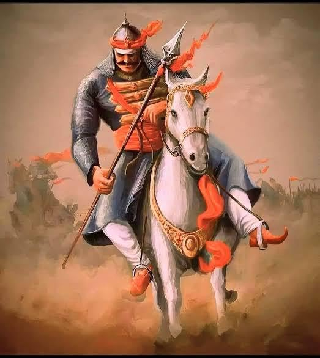
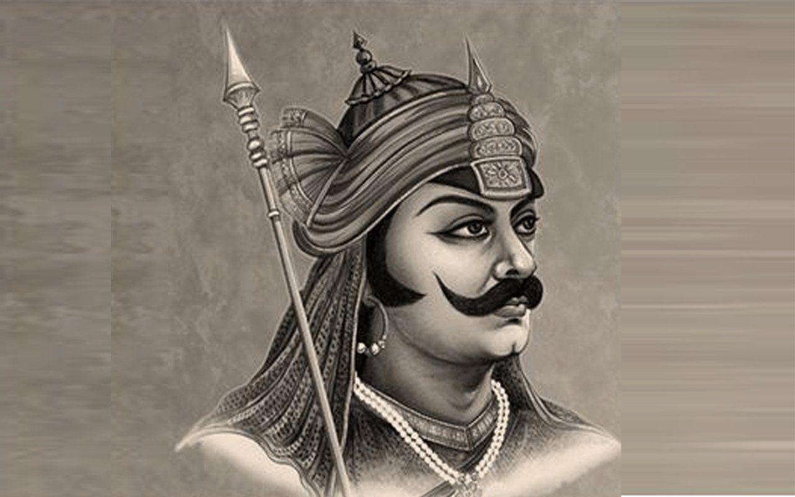
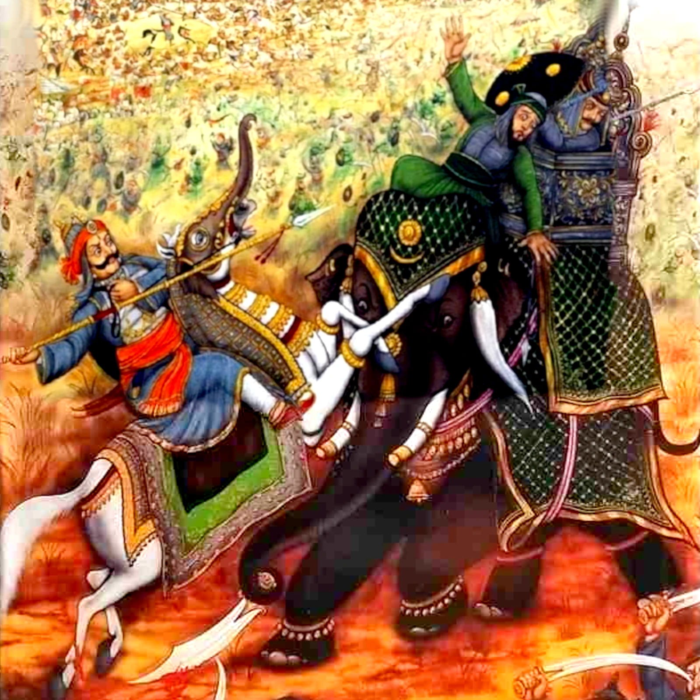

Maharana Pratap portrait
Maharana Pratap
India's Legendary Rajput Warrior
Discover the story of Maharana Pratap Singh I, the brave ruler of Mewar who stood firm against the Mughal empire and inspired generations of warriors and leaders.
Explore the Biography

Maharana Pratap artwork

Udaipur statue of Maharana Pratap

Battle of Haldighati painting
Maharana Pratap portrait
Maharana Pratap artwork
Udaipur statue of Maharana Pratap
Battle of Haldighati painting
Legendary Courage
Maharana Pratap refused to surrender and led his army from the front during the Battle of Haldighati.
Historical Leader
He was the 13th Rana of Mewar and ruled from 1572 to 1597, defending his kingdom's independence.
Lasting Legacy
Pratap is celebrated as a national hero, with statues, films, and stories honoring his valor.
Who was Maharana Pratap?
Maharana Pratap was a Rajput king of Mewar, known for his valiant resistance against the Mughal Empire under Emperor Akbar. He is celebrated for his courage, leadership, and unwavering commitment to his kingdom's independence.
Born in 1540 at Kumbhalgarh Fort, he was the eldest son of Maharana Udai Singh II and Rani Jaiwanta Bai. He became ruler of Mewar in 1572, refusing Akbar's offer of submission and choosing a life of resistance instead.
Pratap used mountain warfare, skilled archers, and loyal Bhil allies to keep his kingdom alive despite repeated Mughal invasions. He established the hill fortress capital at Chavand and became a lasting symbol of Rajput pride.
Birth and Early Life
Born on May 9, 1540, at Kumbhalgarh Fort, Maharana Pratap was the eldest son of Udai Singh II. He was trained in warfare and leadership from a young age.
Accession to Throne
In 1572, at the age of 32, Pratap ascended the throne of Mewar after his father's death, vowing to defend his kingdom against Mughal invasion.
Battle of Haldighati
In 1576, Pratap led his forces against Akbar's army in the famous Battle of Haldighati, showcasing his bravery and strategic prowess.
Guerrilla Warfare
After the battle, Pratap adopted guerrilla tactics, using the Aravalli hills to launch surprise attacks and maintain resistance against the Mughals.
Alliance with Bhils
Pratap formed alliances with the Bhil tribes, gaining their support and using their knowledge of the terrain to his advantage in the ongoing conflict.
Death and Legacy
Maharana Pratap passed away on January 19, 1597, in Chavand. His legacy as a symbol of Rajput valor and resistance continues to inspire.
Maharana Pratap Jayanti
Celebrated annually on May 9th, this festival honors Pratap's birth with parades, cultural programs, and speeches in Rajasthan.
Udaipur Cultural Festival
The City Palace hosts events showcasing Rajput heritage, including dance, music, and exhibitions related to Pratap's legacy.
Battle of Haldighati Reenactment
Annual reenactments at Haldighati Fort bring history to life, attracting tourists and educating visitors about the battle.
Documentary Releases
New films and documentaries about Maharana Pratap are released regularly, highlighting his story for modern audiences.
Educational Workshops
Schools and universities conduct workshops on Rajput history, inspiring students with tales of courage and resistance.
Statue Maintenance Events
Community events for cleaning and maintaining Pratap's statues in Udaipur, fostering local pride and heritage preservation.
Upcoming Events
June 17, 2026
Maharana Pratap Jayanti
Join us for a grand celebration at Kumbhalgarh Fort with cultural performances, speeches, and traditional Rajasthani cuisine.
Learn More
AI Tool
AI History Assistant
⚠️ Disclaimer: This AI assistant is currently under development (Beta Version).
It may occasionally provide inaccurate, incomplete, or inappropriate responses.
Please verify important information independently.
Beta version
Key Facts
- Birth: May 9, 1540, Kumbhalgarh Fort
- Death: January 19, 1597, Chavand
- Reign: 1572–1597
- Consort: Ajabde Bai Punwar
- Successor: Amar Singh I
- Famous For: Resistance against Mughals, Battle of Haldighati
Family
- Part of the Sisodia Rajput dynasty of Mewar
- Chief consort: Ajabde Bai Punwar
- Son and successor: Amar Singh I
- Supported by Bhil allies and his loyal general Bhamashah